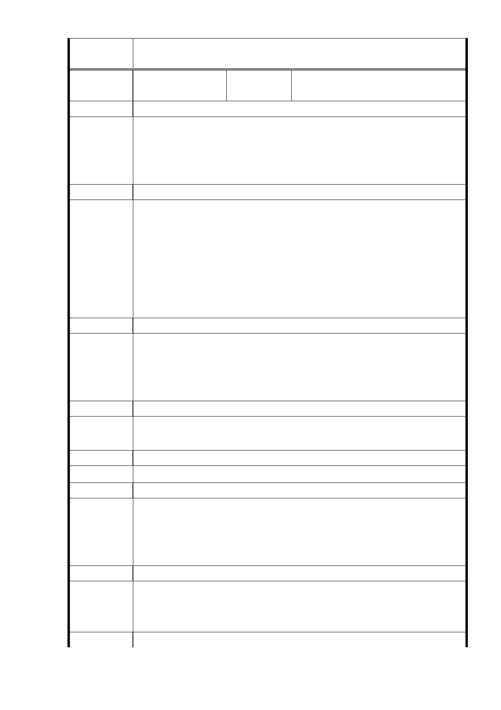

委
決
員
會
議
同編號 1。
編號
56
陳情人
都市發展局整理公開展覽說明會
民眾發言紀要（2014.2.19 來函）
發 言 人 市民一
一、希望廣慈開發後，周邊道路併同拓寬。
建 議 辦 法 二、道路於開發前原本可停車使用，開發後則無法停放車輛，地
區停車問題如何解決。
三、反對於廣慈設置平民住宅。
發 言 人 市民二
一、廣慈北側係為林口街 80 巷。
二、95 年至今廣慈周邊道路均無拓覓，毫無改變。
三、市府政策前後不一致，95 年說公共設施服務水準不佳，103
建議辦法
年政策又說提高容積率可行。
四、請說明容積率從 210％調整至 400％之評估資料。
五、容積率提高至 400％所增加之人潮及車輛將使周邊生活陷入
困境。
發 言 人 市民三
一、林口街 80 巷路寬僅有 8 公尺，容積率為 210％時已對日照
建議辦法
權造成影響，如調整為 400％會更嚴重。
二、應於林口街 80 巷旁劃設 32 公尺綠帶，以維護當地居民日
照權。
發 言 人 市民四
建 議 辦 法 一、廣慈地下有斷層，適合蓋那麼高嗎？
二、地底下都是破碎帶，地基打不到岩盤。
發 言 人 市民五
建 議 辦 法 一、大道路及福德街里民希望建築物越高越好。
發 言 人 市民六
一、請問公營出租住宅之戶數、戶量？
建 議 辦 法 二、出租住宅進出混雜。
三、商業區進出遊覽車及活動多，建議增設大客車停車位於地下
室避免空污。
發 言 人 市民七
一、公營住宅規劃 900 多戶一人房型，但臺北市餘屋最多就是一
建議辦法
人房，是否仍要設置一人房？
二、建築物不應蓋太高，現在容積率比照機關用地是否有道理？
發 言 人 市民八
- 72 -